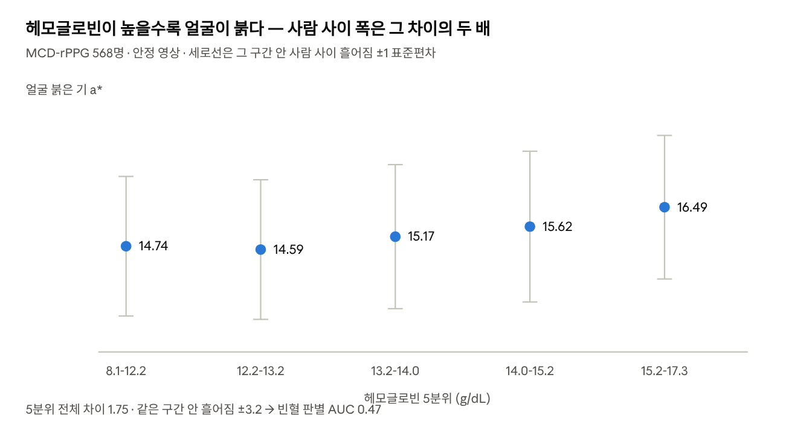

컨디션은 본인이 가장 늦게 안다. Vity 는 아이폰 전면 카메라만으로 얼굴에서 심박을 뽑고, 그 값을 그 사람 자신의 평소와 견준 뒤, 설명되지 않는 날만 쌓는다. 공개 데이터 MCD-rPPG 594명으로 다시 검증했다. 안색은 재지만 판정에 쓰지 않는다 — 그 판단의 근거도 숫자로 적는다.
친구는 안색이 눈에 띄게 나빴고 컨디션도 오래 안 좋았다. 본인도 주변도 피곤한 줄로만 알았다. 백혈병이었고, 치료 시기를 놓쳤다.
여기서 두 가지를 봤다. 사람은 자기 컨디션을 말로 정의하지 못한다 — "좀 안 좋다"가 전부다. 그리고 안색은 매일 거울로 보기 때문에 오히려 어제와 오늘의 차이를 못 잡는다. 천천히 나빠지는 것은 매일 보는 사람이 가장 늦게 안다.
그래서 문제를 좁혔다. 진단이 아니라 기록이다. 오늘이 내 평소와 다른가를, 매일 같은 방식으로 기계가 재서 남겨 두는 것.
경보가 아니라 기록으로 간 데에는 숫자가 있다.
| 근거 | 수치 | 출처 |
|---|---|---|
| 건강한 사람에게 울린 웨어러블 이상 알림 | 월 0.66회 | Mishra et al., Nat. Biomed. Eng. 2020 |
| 평소와 다른 날 중 실제로 아픈 날 | 100번에 1~2번 | 국민건강영양조사 2023 |
| 양성 판정 중 실제 양성(PPV) | 0.35 | Quer et al., Nat. Med. 2021 |
경보는 대부분 틀린다. 그래서 '이상'이라고 단정하지 않는다. 달라진 순간에 이유를 한 번 묻고, 설명되는 변화(운동 · 커피 · 잠 · 긴장)와 설명되지 않는 변화를 나눠 쌓는다. 쌓인 쪽이 길어지면 그때 사람이 판단한다.

그림 1. webapp/face/src/pipeline/ · 5단계 · 분기 1개
각 단계는 앞 단계가 못 지운 것을 지운다. POS 는 조명 세기를, 대역통과는 대역 밖 잡음을, 융합은 한 영역이 가려진 경우를 걸러낸다. 마지막 품질 7조건은 값은 나왔지만 믿을 수 없는 경우를 걸러낸다. 이게 이 앱의 핵심이다.
그걸 가능하게 하는 건 신호 세기(SNR)다. 공개 데이터 20초 창에서 SNR 이 4 dB 를 넘은 창은 평균 오차가 0.2 bpm, ±5 bpm 안이 100% 였다. −2 dB 아래에서는 16.3 bpm, 57% 다. 측정이 자기가 맞았는지를 스스로 안다 — 그래서 못 믿을 때 값 대신 이유를 낸다.
전부 브라우저 안에서 돌아간다. 서버는 계산하지 않고 숫자만 받는다.
품질 기준을 통과한 측정의 평균 오차는 2.62 bpm, ±5 bpm 안이 92.3% 다.
방법은 이렇다. 공개 데이터 MCD-rPPG(Egorov et al., ACM MM 2025)의 정면 웹캠 영상을 20초 창 597개로 잘랐다. 정답은 프레임에 동기된 손끝 PPG 다. 중요한 건 앱이 실제로 돌리는 엔진 그대로를 Node 로 불러 같은 창에 돌렸다는 점이다 — 논문용으로 따로 구현한 코드가 아니다.
| 창 전부 평균 오차 | 통과분 평균 오차 | 통과율 | 통과분 ±5 bpm | |
|---|---|---|---|---|
| 옛 앱 (v1) | 10.3 bpm | 1.75 bpm | 30% | 97.8% |
| rPPG-Toolbox 순서 (v2) | 3.9 bpm | 0.56 bpm | 56% | 97.3% |
| 지금 앱 (v3) | 8.0 bpm | 2.62 bpm | 59% | 92.3% |
창 전부의 오차가 아니라 통과분의 오차를 읽는 게 맞다. 앱은 품질 4조건을 통과한 측정만 숫자로 보여 주고, 떨어지면 값 대신 "다시 재 주세요"를 낸다. 그래서 사용자가 실제로 보는 정확도는 2.62 bpm 이다.
지금 앱은 아직 v2 보다 못하다. 같은 통과율에서 v2 가 0.56 bpm, v3 가 2.62 bpm 이다. 대신 v3 는 v2 가 안 하는 일을 한다 — 머리 움직임 · 조명 간섭 · ROI 불일치를 따로 판정해 이유를 말해 준다. 이 차이를 줄이는 게 다음 과제다.
이 재검증에서 버그를 하나 찾아 고쳤다. 서맥 보정의 증거 문턱이 0.2 로 너무 낮아, 참 심박이 90–114 bpm 이면 f/2 가 보정 구간(45–57 bpm)에 들어와 잡음만으로 절반이 선택됐다. 참 90 bpm 이상 창의 18.8%가 그렇게 읽혔다 — 운동 후와 긴장은 이 앱이 제일 자주 만나는 상황이다. 문턱을 0.45 로 올려 13.0% 로 줄였고, 통과분 오차는 3.37 → 2.62 bpm 이 되었다.
얼굴 붉은 기는 헤모글로빈과 실제로 연결된다. 그런데 빈혈인 사람을 가려내지는 못한다. 동기가 백혈병이었으니 이 질문을 피할 수 없었다.
같은 데이터 594명 중 안정 영상이 있는 568명을 봤다. MCD-rPPG 는 사람마다 혈액 검사값을 같이 준다 — 헤모글로빈 8.1–17.3 g/dL, 빈혈 기준(남 <13, 여 <12) 아래가 90명이다. 20초 구간 17,790개에서 얼굴 색 네 가지를 뽑았다.

그림 2. MCD-rPPG 568명 · research/scripts/30_complexion_594.py
| 재는 것 | 결과 |
|---|---|
| 헤모글로빈 ↔ 원 a* | ρ = +0.187, p < 0.001 |
| 피부톤(L*) · 성별 · 나이를 뺀 뒤 | ρ = +0.117, p = 0.005 |
| 빈혈 판별 (90명) | AUC 0.47 — 동전 던지기 |
| 운동 후 상승 (554명 짝 비교) | 56.5%, p = 0.003 |
읽는 법은 이렇다. 상관은 진짜고 방향도 생리와 맞는다 — 빈혈은 창백하다. 하지만 5분위 양 끝의 차이가 1.75 인데 같은 구간 안 사람 사이의 흩어짐은 ±3.2 다. 집단으로는 보이고 개인에게는 안 보인다.
왜 그런지까지 나왔다. 조명과 기기를 지우는 보정(볼 a* − 이마 a*)은 측정 잡음을 2.7배 줄인다 (구간 간 흔들림 1.186 → 0.446, 영상 1,126개). 그런데 그 보정을 하면 헤모글로빈과의 상관도 같이 사라진다 (ρ = −0.07, 무의미). 헤모글로빈은 이마와 볼을 똑같이 붉히므로 뺄셈에서 지워진다. 정보는 절대 붉기에 있고, 절대 붉기는 조명과 기기에 오염된다.
그래서 안색은 재서 기록하되 판정에는 쓰지 않는다. 고른 것이 아니라 데이터가 시킨 것이다.
정확히 재는 것보다 어려웠던 건 쓸 만하게 만드는 것이었다. 조금만 흔들려도 측정 불가가 떴고, 30초는 길었다. 합성 신호로 조건을 바꿔 가며 직접 실험했다.
평가해 보니 bpm 은 100% 참값 ±5 bpm 안인데 이전 기준이 그중 21%를 거부했다. 실패 이유의 대부분은 머리 이동(14%)이었다 — 손으로 든 폰은 그 선을 넘기 쉽지만, 넘었다고 값이 틀리지는 않았다.
| 조건 | 통과율 | 거짓 통과 |
|---|---|---|
| 이전 기준 (이동 3.5% / 90%, SNR ≥ 0 dB) | 78% | 0% |
| 기준 완화 (이동 5% / 85%, SNR ≥ −3 dB) | 91% | 0% |
| + 구간 선택 | 95% | 0% |
구간 선택은 전체가 떨어졌을 때만 15초짜리 구간을 5초 간격으로 훑어 제일 깨끗한 구간을 쓴다. 단, 그 구간과 ±3 bpm 안에서 동의하는 구간이 2개 이상일 때만 쓴다. 합의 조건을 빼면 순수 잡음이 7% 통과했다 — 구간을 여러 번 보는 것 자체가 다중 비교 문제를 만들기 때문이다.
무엇이 시간을 잡아먹는지 하나씩 떼어 보았다. 최소 시간도, 안정 조건도 아니었다 — 최소 시간을 10초에서 5초로 내려도 중앙값이 1초 줄었고, "3연속 ±2 bpm" 은 통째로 빼도 숫자가 그대로였다. 범인은 조기 종료만 따로 요구하던 SNR 3 dB 였다. 품질 게이트는 −3 dB 면 통과시키는데 거기서 6 dB 를 더 받아내고 있었다.
| 규칙 (흔들리는 관측, n=150) | 평균 | 중앙 | 30초까지 감 | ±5 bpm | 거짓 수락 |
|---|---|---|---|---|---|
| 전 — SNR ≥ 3 dB, 최소 10초 | 14.2초 | 10.0초 | 9% | 100% | 0% |
| 후 — SNR ≥ 0 dB, 최소 6초 | 8.9초 | 7.0초 | 2% | 100% | 0% |
| 참고 — SNR 조건을 품질(−3 dB)에 맡기면 | 8.5초 | 7.0초 | 2% | 100% | 4% |
정확도와 안전은 한 칸도 안 내주고 평균 37%가 줄었다. 0 dB 가 바닥이다 — 한 칸만 더 풀면 맥 없는 입력이 4% 통과한다.
신호가 약하면 변동이 없는 신호에서도 25 ms 넘는 HRV 가 읽힌다 — 12 dB 아래에서 100% 그렇다. 그래서 10 dB 아래에서는 HRV · 스트레스를 아예 보여 주지 않는다. 공개 데이터에서 HRV 를 낸 창은 0.2% 뿐이었다 — 실기기에서 거의 안 나오는 것이 데이터에서도 같이 나타난다.
아무리 정확해도 안 재면 소용없다. 개인 기준선은 최소 5회부터 서고, 쌓일수록 좌우 폭이 좁아진다. 그래서 UX 의 목표는 하나다 — 측정 빈도. 재미를 위한 장치가 아니라 빈도를 위한 장치다.
| 장치 | 하는 일 | 빈도에 어떻게 기여하나 |
|---|---|---|
| 측정 시간 | 빠르게 = 심박만, 보통 7초 · 전체 = 30초 | 매일 재는 일의 비용을 낮춘다 |
| 캐릭터 · 컷씬 | 인트로 5단계, 상태별 표정 | 숫자 대신 말을 건다 |
| 그룹 인증 | 기상 · 공부 시작을 친구와 묶어 인증 | 혼자면 빠지는 날을 막는다 |
| 공부 모드 | 점수 · 긴장 · 수면으로 15+5 / 25+5 / 50+10분 추천 | 재고 나서 할 일이 생긴다 |
측정 뒤 흐름은 항상 같다. 평소값 쌓기 → 평소 대비 차이 표시 → 이유 묻기 → 설명 안 되는 날만 쌓기. 이유는 세 가지만 묻는다 — 어젯밤 수면, 커피 잔 수, 기분. 지난 답을 기억해 두어 한 번씩이면 끝난다.
그룹은 인증 기능만 한다. 그룹에 보이는 것은 이름 · 인증 시각 · 연속 일수뿐이다 — 점수도, 심박도, 얼굴도 나가지 않는다. 건강 숫자를 남과 비교하게 만들면 개인 기준선이라는 전제가 깨진다.
프라이버시도 기능이 아니라 제약으로 두었다. 카메라 프레임 · 영역 픽셀 · 얼굴 랜드마크는 기기 메모리에서만 쓰고 저장하지 않는다. 서버로 가는 것은 브라우저가 계산한 숫자 12개뿐이고, 첫 화면에서 개인정보보호법 제23조 동의를 받는다.
동기는 안색인데 왜 안색으로 판정하지 않나. 568명에서 상관은 있었다(ρ = +0.187, p < 0.001). 그런데 빈혈 판별 AUC 가 0.47 이다. 5분위 양 끝의 차이(1.75)보다 같은 구간 안 사람 사이의 흩어짐(±3.2)이 두 배 크다. 쓰면 틀린다. 재서 기록은 남기되 판정에는 넣지 않는다.
그럼 백혈병을 잡을 수 있나. 못 잡는다. 이 앱은 진단하지 않는다. 할 수 있는 것은 '평소와 다른 날'을 날짜와 이유와 함께 남겨, 병원에 갈 때 말할 거리를 만드는 것이다. 친구의 문제는 이상을 못 재서가 아니라 달라진 걸 아무도 적어 두지 않아서였다.
스마트워치가 이미 있는데 왜 얼굴인가. 처음엔 워치로 만들려고 했고, 공개 데이터 세 개를 돌려 보고 접었다. WESAD 15명 동시 기록에서 심박은 가슴 ECG · 손목 PPG 모두 15/15명 올랐다. 그런데 HRV(RMSSD)는 손목에서 3.6배 부풀려져 방향조차 반대로 나왔다(가슴 −27%, 손목 +3%). 심박은 어디서든 잡히고 막히는 건 HRV 쪽이다. 그러면 따로 사야 하는 기기를 쓸 이유가 없다.
2.62 bpm 이면 의료기기 기준에 못 미치지 않나. 맞다. 의료기기가 아니고 진단 · 치료 목적이 아니라고 화면에 적어 둔다. 우리가 쓰는 것은 절대값이 아니라 같은 사람 안의 변화량이고, 편차 임계를 max(5 bpm, 2 × 개인 산포)로 측정 오차보다 크게 잡는다.
개인 기준선이 더 낫다는 근거는. 같은 얼굴 영상 100명에서, 사람끼리 비교하면 운동 전후 분류가 AUC 0.55 — 우연 수준이다. 같은 사람의 평소 영상과 비교하면 62%를 맞혔다(p = 0.027). 손목 데이터에서 얻은 결론이 얼굴에서 반복됐다.
합성 신호 실험을 믿을 수 있나. 역할을 나눠 둔다. 정확도는 공개 실데이터(MCD-rPPG)로만 재고, 합성은 '맥이 없을 때 통과하지 않는가' 처럼 정답을 통제해야 답할 수 있는 질문에만 쓴다. 두 숫자를 섞어 말하지 않는다.
시중 제품과 무엇이 다른가. 시중 서비스는 30초에 항목 10개와 종합건강점수를 낸다. 우리는 검증한 항목만 숫자로 내고, 종합 점수의 계산식을 화면에 공개하며, 신호가 약하면 숫자를 내지 않는다. 호흡은 정답과의 상관이 0.1 이라 점수 가중치가 0% 다.
HRV 가 거의 안 나오면 서비스가 되나. 심박은 나온다. 점수는 빠진 항목을 빼고 다시 나눈다. HRV 를 못 낸 날은 "신호가 약해 박동 간격은 재지 않았다"고 적는다. 못 재는 것을 못 쟀다고 적는 것이 이 앱의 기능이다.
조명 · 기종이 바뀌면. 가장 큰 미검증이다. 같은 프레임 안 보정(볼 − 이마)과 노출 · 화이트밸런스 잠금을 넣어 두었지만, iOS Safari 는 잠금 요청을 거절하는 일이 많다. 팀원 폰 2주 운용이 다음 단계다.
| 항목 | 지금 | 다음 |
|---|---|---|
| 실기기 측정 | 브라우저에서 합성 신호로만 끝까지 확인 | 팀원 폰 2주 운용, 조명 · 기종별 오차 |
| 머리 이동 판정 | MCD-rPPG 에 랜드마크가 없어 고정 상자로 영역을 뽑았다 — 품질 4조건 중 이 하나는 검증되지 않았다 | 랜드마크가 있는 데이터 또는 실기기 |
| 정확도 격차 | v3 2.62 bpm vs v2 0.56 bpm | 영역 선택 · 융합 개선 |
| 안색 | 사람 간 비교만 봤다 | 같은 사람 안 장기 추세 (docs/research/COMPLEXION.md) |
| 부정맥 | 건강한 사람 데이터로 오탐만 확인 (0 / 129) | 다시 재기 · 보건실 안내로만 사용 |
| 계정 | 브라우저마다 무작위 아이디 | 로그인 또는 기기 안 저장 |
npm --prefix webapp/face ci && npm --prefix webapp/face test # 엔진 테스트 99개 python3 research/scripts/23_mcd_extract.py --n 600 # 영상을 받아 얼굴 색만 남기고 지운다 python3 research/scripts/28_rppg_v3_face.py # 실험 1 — 심박 정확도 python3 research/scripts/30_complexion_594.py # 실험 2 — 안색 node webapp/face/scripts/experiments/p2d_fast.js # 실험 3 — 측정 시간
영상은 받는 즉시 얼굴을 찾아 세 영역의 평균 RGB 만 남기고 지운다. 저장소에 얼굴 영상도 사진도 남지 않는다.
| 얼굴 영상 + 프레임 동기 PPG + 혈액 검사 | MCD-rPPG (Egorov et al., ACM MM 2025) · CC BY 4.0 |
| 손목 vs 가슴 HRV 동시 기록 | WESAD (Schmidt et al., ICMI 2018) |
| 웨어러블 이상 알림 빈도 | Mishra et al., Nat. Biomed. Eng. 2020 |
| 양성 판정의 정밀도 | Quer et al., Nat. Med. 2021 |
| 맥파 추출 방법 | POS — Wang et al., IEEE TBME 2017 |
| 비교 구현 | rPPG-Toolbox (Liu et al., NeurIPS D&B 2023) |
| 얼굴 랜드마크 | MediaPipe Face Landmarker (Lugaresi et al., 2019) |
본 서비스는 의료기기가 아니며 질병의 진단 · 치료를 목적으로 하지 않는다. 건강 상태의 판단은 의료 전문가와 상담이 필요하다.